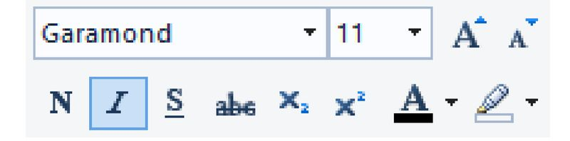

A prática em escrever num computador pode ser desenvolvida dando uma habilidade extra ao usuário. Existem cursos muito bem elaborados de datilografia ou digitação. Mas para quem não pretende se aprofundar tanto na digitação existem softwares e sites onde se pode praticar livremente, como, por exemplo, estes sites:
Existem diversos outros sites onde é possível treinar a digitação, mas antes de tudo é bom pesquisar um pouco sobre como começar para saber como posicionar as mãos sobre o teclado.
Para digitar nossos textos a princípio vamos utilizar o Wordpad, que pode ser encontrado na pasta Acessórios do Windows no menu Iniciar.
O Wordpad possui recursos básicos de formatação de texto. A formatação de texto consiste em alterar as propriedades de Fonte, Estilo de Caractere e Estilo de Parágrafo de modo a tornar o texto apresentável esteticamente.
Para nossa primeira formatação, abra o Wordpad e digite o texto a seguir, salve o arquivo com o nome Poema Neruda, dentro da pasta com o seu nome em Documentos.
**i
Não te quero senão porque te quero
e de querer-te a não querer-te chego
e de esperar-te quando não te espero
passa meu coração do frio ao fogo.
Quero-te apenas porque a ti eu quero,
a ti odeio sem fim e, odiando-te, te suplico,
e a medida do meu amor viajante
é não ver-te e amar-te como um cego.
Consumirá talvez a luz de Janeiro,
o seu raio cruel, meu coração inteiro,
roubando-me a chave do sossego.
Nesta história apenas eu morro
e morrerei de amor porque te quero,
porque te quero, amor, a sangue e fogo.
Pablo Neruda
i**
Na imagem abaixo temos a Barra de Estilo de Caractere, na primeira linha temos a caixa com as fontes, onde está selecionada a fonte Garamond e logo depois temos o tamanho da fonte, configurado como 11. Na segunda linha temos os estilos de caractere, na ordem: Negrito, Itálico, Sublinhado, Tachado, Subscrito e Sobrescrito, e em seguida as cores da letra e de fundo.
Formataremos nosso poema como Garamond 11 Itálico. Isso significa que o texto terá uma fonte Garamond, tamanho 11 e estilo Itálico. Para tal, selecione todo o texto antes de alterar as propriedades, ou clicando e arrastando do início até o final, ou usando o atalho Ctrl+T.
Já alteramos a fonte e o estilo de caractere, agora alteraremos o estilo de parágrafo, a caixa de estilos de parágrafo fica logo ao lado da de caractere, veja-a na imagem abaixo:
Ela também possui duas linhas, na primeira linha temos os botões de aumentar e diminuir a tabulação, que é o recuo ou espaço à direita do parágrafo em relação à margem. O terceiro botão tem os estilos de lista, ordenada e não ordenada. O quarto botão altera o tamanho de espaço entre as linhas. Na segunda linha da caixa de estilos de parágrafo temos os quatro botões com o alinhamento do parágrafo, à esquerda, à direita, centralizado e justificado. O modo justificado mantém as linhas com o mesmo tamanho.
No nosso poema a única coisa que alteraremos no parágrafo é o alinhamento, que colocaremos como centralizado.